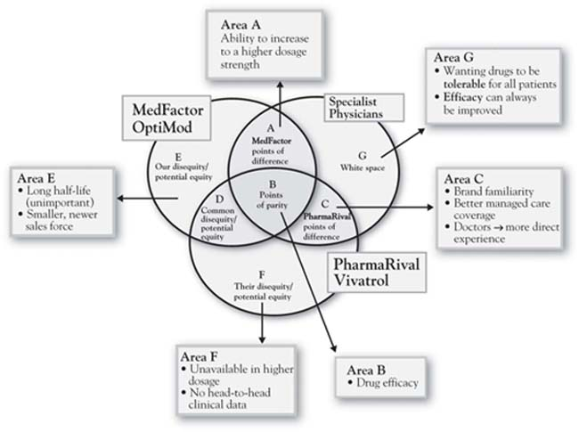

Step 3 involves the actual sorting of value into the seven categories defined by the 3-Circle model. As we have emphasized throughout the book, each of these categories has implications for growth strategies. Together, they summarize most of the core concepts of current work on growth strategy. For MedFactor’s drug OptiMod, Annie’s analysis based on interviews with several specialist physicians revealed a number of important insights (see Figure 9.2 "Three-Circle Analysis for MedFactor’s New Drug" for a summary). The analysis illustrates a classic case of a new brand facing an entrenched existing brand with whom physicians are quite familiar. Annie’s drug OptiMod gets unique credit from physicians only for its flexibility in dosage levels (Area A). In contrast, the competitor’s Vivatrol is a very familiar drug with which physicians have a great deal of experience. It is also perceived by physicians to have an advantage on the managed-care side, meaning that they believe the patient will pay less and be better served by insurance coverage for Vivatrol compared to OptiMod.
Figure 9.2 Three-Circle Analysis for MedFactor’s New Drug
The Figure 9.2 "Three-Circle Analysis for MedFactor’s New Drug" analysis captures physician perceptions as Annie identified them in the interviews. However, two critical points came as a complete surprise:
These two insights were quite significant but there was more. In addition to the earlier findings of important customer attributes that the executive team had not included in their original list, the physicians volunteered that two other factors were influential in their assessments of the two companies and their drugs: laboratory evidence and sales-force experience.
Figure 9.3 3-Circle Model Areas and Generic Growth Questions